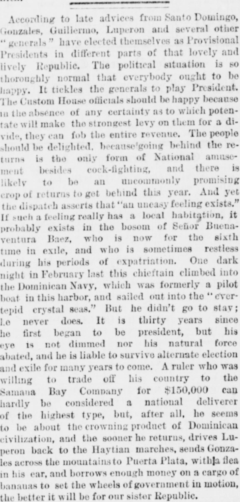

And yet the dispatch asserts that “an uneasy feeling exists,” IfY sin embargo, el despacho afirma que «existe un sentimiento de inquietud», si
New-York Tribune. New York [N.Y.], April 25, 1878. Page 4. View the originalVer el original

The New-York Tribune commented satirically on the sixth exile of former Dominican President Buenaventura Báez, who had slipped away on a small boat after decades of fluctuating between power and banishment. The paper noted Báez's past attempt to lease Dominican territory to the Samaná Bay Company and predicted he would inevitably return to challenge rivals such as Luperón and González.El New-York Tribune comentó con tono satírico el sexto destierro del expresidente dominicano Buenaventura Báez, quien se marchó furtivamente en una pequeña embarcación tras décadas alternando entre el mando supremo y la proscripción. La publicación evocó las pretéritas tentativas de Báez para arrendar suelo patrio a la Samana Bay Company y auguró que retornaría indefectiblemente a medir fuerzas con rivales de la talla de Luperón y González.
FULL TEXT:TEXTO COMPLETO:
According to late advices from Santo Domingo, Gonzales, Guillermo, Luperon and several other "generals" have elected themselves as Provisional Presidents in different parts of that lovely and lively Republic. The political situation is so thoroughly normal that everybody ought to be happy. It tickles the generals to play President. The Custom House officials should be happy because in the absence of any certainty as to which potentate will make the strongest levy on them for a divide, they can fob the entire revenue. The people should be delighted, because going behind the returns is the only form of National amusement besides cock-fighting, and there is likely to be an uncommonly promising crop of returns to get behind this year. And yet the dispatch asserts that "an uneasy feeling exists." If such a feeling really has a local habitation, it probably exists in the bosom of Señor Buenaventura Baez, who is now for the sixth time in exile, and who is sometimes restless during his periods of expatriation. One dark night in February last this chieftain climbed into the Dominican Navy, which was formerly a pilot boat in this harbor, and sailed out into the "ever-tepid crystal seas." But he didn't go to stay; he never does. It is thirty years since he first began to be president, but his eye is not dimmed nor his natural force abated, and he is liable to survive alternate election and exile for many years to come. A ruler who was willing to trade off his country to the Samana Bay Company for $150,000 can hardly be considered a national deliverer of the highest type, but, after all, he seems to be about the crowning product of Dominican civilization, and the sooner he returns, drives Luperon back to the Haytian marches, sends Gonzales across the mountains to Puerta Plata, with a flea in his ear, and borrows enough money on a cargo of bananas to set the wheels of government in motion, the better it will be for our sister Republic.Según noticias recientes de Santo Domingo, Gonzales, Guillermo, Luperon y varios otros «generales» se han elegido a sí mismos como Presidentes Provisionales en diferentes partes de esa encantadora y vivaz República. La situación política es tan enteramente normal que todo el mundo debería estar feliz. A los generales les divierte jugar a ser Presidente. Los oficiales de la Aduana deberían estar felices porque en ausencia de certeza alguna en cuanto a qué potentado les hará la exacción más fuerte para una repartición, pueden embolsarse la totalidad de las rentas. El pueblo debería estar encantado, porque estar tras las devoluciones es la única forma de diversión Nacional además de las peleas de gallos, y es probable que haya una cosecha inusualmente prometedora de devoluciones tras las que estar este año. Y sin embargo el despacho afirma que «existe un sentimiento de inquietud». Si tal sentimiento realmente tiene una morada local, probablemente existe en el pecho del Señor Buenaventura Báez, quien está ahora por sexta vez en el exilio, y quien a veces está inquieto durante sus períodos de expatriación. Una oscura noche de febrero pasado este caudillo se subió a la Marina Dominicana, que fue antes un bote piloto en este puerto, y zarpó hacia los «mares de cristal siempre tibios». Pero no se fue para quedarse; nunca lo hace. Han pasado treinta años desde que comenzó por primera vez a ser presidente, pero su ojo no se ha oscurecido ni su fuerza natural disminuido, y es probable que sobreviva a la alternancia de elección y exilio por muchos años por venir. Un gobernante que estaba dispuesto a entregar su país a la Compañía de la Bahía de Samaná por $150,000 difícilmente puede ser considerado un libertador nacional del tipo más elevado, pero, después de todo, parece ser el producto cumbre de la civilización dominicana, y cuanto antes regrese, haga retroceder a Luperon a las fronteras haitianas, envíe a Gonzales a través de las montañas a Puerta Plata, con una pulga en la oreja, y tome prestado suficiente dinero sobre un cargamento de plátanos para poner en movimiento las ruedas del gobierno, mejor será para nuestra República hermana.